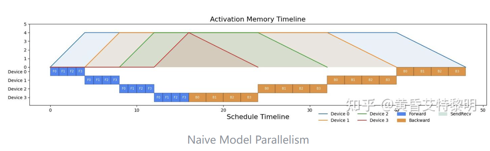
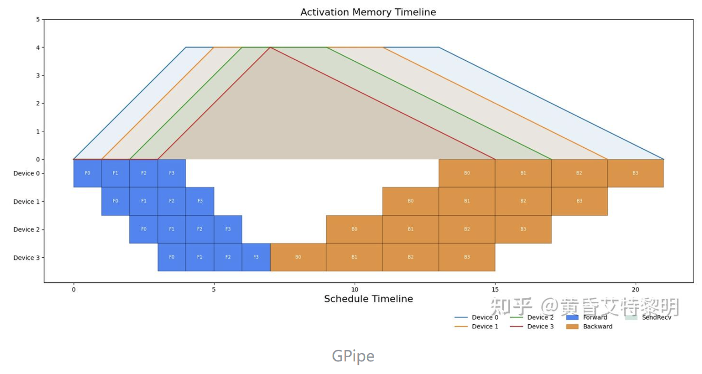

← 返回 Technical-FAQ 索引
并行算法知识
整理自 流水线并行可视化调度（Gpipe, 1F1B, Interleaved-1F1B, Zero Bubble），聚焦大模型分布式训练中的流水线并行（Pipeline Parallelism, PP）调度策略。
一、PP 并行：流水线并行概述
随着深度学习模型规模的爆炸式增长，单张 GPU/NPU 已无法容纳完整模型。模型并行（Model Parallelism）的核心思想是将模型拆分到多个计算设备上。其中，按层切分的方式称为流水线并行（Pipeline Parallelism, PP）：例如一个 24 层的 Transformer 网络分配到 4 张 GPU 上，每张 GPU 负责 6 层的计算与存储。
核心目标：在多个 stage（阶段）之间重叠计算，减少设备空闲气泡（Bubble），同时控制激活值显存峰值。
1.1 符号约定
| 符号 | 含义 |
|---|
p | 流水线并行大小（stage 总数） |
p_i | 第 i 个 pp stage（0 表示第一个 stage） |
vpp | Interleaved-1F1B 中每个 pp stage 内的 chunk 数 |
g | Interleaved-1F1B 的 group 大小 |
b | micro-batch 数量（mini-batch 被切分的份数） |
T_F | 单个 micro-batch 前向计算时间 |
T_B | 反向计算输入 x 的梯度时间 |
T_W | 反向计算参数 w 的梯度时间 |
M_F | 前向带来的激活显存变化量（+1） |
M_B | 反向计算 x 梯度带来的显存变化量（+0） |
M_W | 反向计算 w 梯度后释放激活带来的显存变化量（-1） |
1.2 为什么会有气泡？
流水线气泡（Bubble）指设备处于等待状态、没有执行有效计算的时间。产生原因包括：
- 前向传播时，后面的 stage 必须等待前面 stage 的输出；
- 反向传播时，前面的 stage 必须等待后面 stage 回传的梯度；
- 流水线开始和结束阶段，无法让所有 stage 同时满载。
时间 →
Stage0: [F1][F2][F3] [B1][B2][B3]
Stage1: [F1][F2][F3] [B1][B2][B3]
Stage2: [F1][F2][F3][B1][B2][B3]
↑ 空白处以及反向需等待全链路前向完成而产生的间隙，即为流水线气泡（Bubble）。
反向自最后一个 stage 倒着回传：Stage2 先算 B，再 Stage1，最后 Stage0。
二、Naive Model Parallelism

Naive Model Parallelism：batch 被切分为 micro-batch（F0-F3），但设备间不做流水交错；每个 stage 先算完所有 micro-batch 的前向，等最后 stage 前向与 loss 完成后，反向自末 stage 依次倒传回首个 stage。
2.1 思想与调度
最直观的按层切分方式：将模型分成 p 个 stage，每个 stage 的参数和计算放在一张卡上。mini-batch 可以被切分为更小的 micro-batch，但在 Naive 模式下设备间不做流水交错——前一个 stage 必须把自己负责的所有 micro-batch 前向算完，后一个 stage 才能开始；前向全部完成后，再从最后一个 stage 依次反向回传。
时间 →
设备0(stage0): [F0][F1][F2][F3] [B0][B1][B2][B3]
设备1(stage1): [F0][F1][F2][F3] [B0][B1][B2][B3]
设备2(stage2): [F0][F1][F2][F3] [B0][B1][B2][B3]
设备3(stage3): [F0][F1][F2][F3][B0][B1][B2][B3]
说明：batch 被切分为 4 个 micro-batch（F0-F3），但 stage 间不做流水交错。
必须等最后一个 stage（stage3）完成全部前向、loss 算出后，
反向自 stage3 依次倒传回 stage0（B 在 stage3 紧接着 F，随后 stage2/1/0 依次跟进）；
任意时刻仅一个设备在计算
2.2 特点
- 调度简单：前向、反向依次串行执行；
- 显存均衡：不同设备峰值显存一致；
- 利用率极低：任意时刻仅有一个设备在工作，其余设备空等。
2.3 定量分析
设备利用率 = 1 / p
理论 Bubble Rate = 1 - 1/p = (p-1) / p
任意设备峰值激活显存 = (M_F × b) / p
解释：每个 micro-batch 只有 1/p 的激活需要保存，一共 b 份数据，因此总激活显存为 M_F × b / p。当 p=4 时， utilization 仅 25%，75% 的时间都是气泡。
三、GPipe

GPipe 调度：4 个 device、4 个 micro-batch（F0-F3）。stage 间流水交错：device 0 算完 F0 就传给 device 1，自己继续算 F1；反向同样流水回传。气泡集中在流水线启动、结束以及前向→反向转换处，但激活值会在前向阶段持续堆积，形成显存峰值。
3.1 思想与调度
GPipe 将 mini-batch 切分为更小的 micro-batch。第一个 stage 计算完一份数据就立即传给下一个 stage，不必等整个 batch 完成。这样后面的 stage 可以更早开始，从而大幅减少气泡。
时间 →
Stage0: [F1][F2][F3][F4][ ][ ][ ][B1][B2][B3][B4]
Stage1: [ ][F1][F2][F3][F4][ ][ ][ ][B1][B2][B3][B4]
Stage2: [ ][ ][F1][F2][F3][F4][ ][ ][ ][B1][B2][B3][B4]
Stage3: [ ][ ][ ][F1][F2][F3][F4][ ][ ][ ][B1][B2][B3][B4]
↑ 气泡集中在开始、结束以及前向→反向转换处
3.2 特点
- 将 mini-batch 切分为 micro-batch，流水线执行；
- 不同设备的激活峰值显存仍然一致；
- 实现简单，几乎无损提升，仅增加通信次数。
3.3 缺点
- 仍有较大气泡，主要集中在流水线开始/结束阶段；
- 每个设备在前向过程需要保存所有 micro-batch 的中间激活，显存开销较大。
3.4 定量分析
理论 Bubble Rate = (p - 1) / (b + p - 1)
任意设备峰值激活显存 = (M_F × b) / p
举例：设 p=4，b=8，则 GPipe 的 Bubble Rate = (4-1)/(8+4-1) = 3/11 ≈ 27.3%，相比 Naive 的 75% 大幅下降。若 b 增大到 32，Bubble Rate 进一步降至 3/35 ≈ 8.6%。
四、1F1B（One Forward One Backward）
4.1 思想与调度
1F1B 的核心是让每个 micro-batch 尽早进行反向传播，不必等待所有 micro-batch 前向完成。这样前向保留的激活可以尽早释放，从而降低设备的峰值显存。
时间 →
Stage0: [F1][F2][B1][F3][B2][F4][B3][F5][B4][F6][B5][F7][B6][F8][B7][B8]
Stage1: [ ][F1][F2][B1][F3][B2][F4][B3][F5][B4][F6][B5][F7][B6][F8][B7][B8]
Stage2: [ ][ ][F1][F2][B1][F3][B2][F4][B3][F5][B4][F6][B5][F7][B6][F8][B7][B8]
Stage3: [ ][ ][ ][F1][F2][B1][F3][B2][F4][B3][F5][B4][F6][B5][F7][B6][F8][B7][B8]
稳定阶段：一次前向（F）紧跟一次反向（B）
4.2 三个阶段
- warmup：执行
p - p_i - 1 次前向；
- 1f1b：执行
b - warmup 次前向反向交替；
- cooldown：执行
p - p_i - 1 次反向。
4.3 warmup 次数推导
last stage 全程为 1F1B，因此 1F1B 次数 = b
由于 1F1B 串行依赖 prev stage 的 backward，其他 stage 的 1F1B 次数 = b - (p - p_i - 1)
因此 warmup 次数 = b - (b - (p - p_i - 1)) = p - p_i - 1
直观理解：为了维持 last stage 在稳定阶段无气泡地 1F1B，前面的 stage 需要提前完成 p - p_i - 1 次前向作为“预热”。如果 warmup 更多，只是把气泡从 warmup 转移到 1f1b 阶段，不降低整体 Bubble Rate，反而增加显存峰值。
4.4 特点
- 稳定阶段采用 1 前向 + 1 反向的交替调度；
- 设备激活峰值显存仅与 stage 位置有关，与 mini-batch size 无关；
- 实现较 GPipe 复杂，但 Bubble Rate 与 GPipe 相同。
4.5 定量分析
理论 Bubble Rate = (p - 1) / (b + p - 1)
不同设备峰值激活显存 = M_F × (p - p_i) / p
系统峰值显存发生在 stage 0（p_i = 0）：
Max Memory = M_F × p / p = M_F
举例：p=4，stage 0 的峰值显存为 M_F × (4-0)/4 = M_F，而 stage 3 的峰值显存为 M_F × (4-3)/4 = M_F/4。因此 1F1B 通过“前轻后重”的显存分布，把系统峰值从 M_F × b / p 降到与 b 无关的 M_F。
4.6 实现细节补充
Megatron-LM 实现 1F1B 时采用了奇偶通信策略，避免交叉通信带来的环状等待。PipeDream 论文还提出了 Weight Stashing 和 Vertical Sync 技术，在允许参数非一致性的情况下进一步降低 Bubble Rate。本文仅讨论参数一致性下的 1F1B。
五、Interleaved-1F1B
5.1 思想与调度
从 1F1B 可以看出，last stage 在稳定阶段已经没有气泡，但整个系统效率仍受前向串行依赖限制：last stage 不能立刻启动，需要 warmup；first stage 的反向也不能更早结束。Interleaved-1F1B 将每个 stage 上的模型再次切分为多个 chunk，这样 last stage 可以更早启动，first stage 的反向也能更早完成。
每个 stage 包含 2 个 chunk（vpp=2）
时间 →
Stage0-Ch0: [F1][F3][B1][F5][B3][F7][B5][B7]
Stage0-Ch1: [F2][F4][B2][F6][B4][F8][B6][B8]
Stage1-Ch0: [ ][F1][F3][B1][F5][B3][F7][B5][B7]
Stage1-Ch1: [ ][ ][F2][F4][B2][F6][B4][F8][B6][B8]
...
组间交替执行，每个 chunk 内部仍维持 1F1B
5.2 特点
- 每个 pp stage 存在多个 chunk；
- 稳定阶段仍采用 1F1B 调度；
- 相比 1F1B 降低了 Bubble Rate，但通信量和次数增加，显存峰值也增加。
5.3 三个阶段
- warmup：
(vpp - 1) × g + 2 × (p - p_i - 1) 次前向；
- last stage 需要
(vpp - 1) × group_size 次前向进入 1F1B；
- 其他 stage 由于前向和反向的串行依赖，需要
2 × (p - p_i - 1) 次前向进入 1F1B。
5.4 定量分析
理论 Bubble Rate = (p - 1) / (p - 1 + vpp × b)
不同设备峰值激活显存 = M_F × ((vpp - 1) × g + 2 × (p - p_i - 1) + 1) / (p × vpp)
系统峰值显存发生在 stage 0。
举例：p=4, b=8, vpp=2, g=1。Bubble Rate = (4-1)/(4-1+2×8) = 3/19 ≈ 15.8%，比 1F1B 的 27.3% 进一步降低。代价是每个 micro-batch 的激活量从 1/p 降为 1/(p×vpp)，但同时需要保留的 virtual micro-batch 数量增加。
5.5 实现细节补充
Interleaved-1F1B 在实现上采用分组交替执行：每执行一组前向或反向就切换到下一个 chunk。该调度图与 Megatron-LM 原论文在 warmup/cooldown 阶段存在细微出入，本文参考实际 Megatron-LM 代码实现，并受奇偶通信策略影响。
六、Zero Bubble（零气泡）
6.1 思想
Zero Bubble 系列方法（如 ZB1P、ZB2P）通过将反向传播进一步拆分为 T_B（输入梯度）和 T_W（参数梯度）两个阶段，并重新调度执行顺序，使得前向激活可以在完成 T_B 后立即释放，而 T_W 可以延迟执行以填充气泡，从而在理论上接近零气泡。
传统反向：B = 计算 x 梯度 + 计算 w 梯度 + 释放激活
Zero Bubble：将 B 拆分为 B(输入梯度) 和 W(参数梯度)
时间 →
Stage0: [F1][F2][B1][W1][F3][B2][W2][F4][B3][W3]...
Stage1: [ ][F1][F2][B1][W1][F3][B2][W2][F4][B3][W3]...
W 阶段用来填充原本的空闲气泡
6.2 现状
Zero Bubble 目前仍在快速发展中，具体调度策略、内存权衡和工程实现细节因论文版本而异。本文保持“待更新”占位，后续可补充 ZB1P/ZB2P 的精确公式与可视化。
注意：Zero Bubble 通常需要更复杂的显存管理，因为延迟 T_W 意味着需要保存更多的中间状态或梯度累计缓冲区。
七、四种策略对比总结
| 策略 |
Bubble Rate |
峰值显存（stage 0） |
通信量 |
实现复杂度 |
| Naive MP |
(p-1)/p |
M_F × b / p |
低 |
低 |
| GPipe |
(p-1)/(b+p-1) |
M_F × b / p |
中 |
中 |
| 1F1B |
(p-1)/(b+p-1) |
M_F |
中 |
高 |
| Interleaved-1F1B |
(p-1)/(p-1+vpp×b) |
M_F × ((vpp-1)×g + 2×(p-1) + 1)/(p×vpp) |
高 |
很高 |
| Zero Bubble |
趋近于 0 |
更高（需额外缓冲） |
高 |
很高 |
八、工程实践建议
- GPU 显存紧张：优先使用 1F1B 或 Interleaved-1F1B，利用其低峰值显存特性；
- 追求吞吐：在显存允许的情况下使用 Interleaved-1F1B，并增大 micro-batch 数量 b；
- 实现成本敏感：GPipe 是简单有效的 baseline；
- 关注 Zero Bubble：适合对训练效率极端敏感、愿意承担更高实现和内存成本的场景。
九、参考资料
- [1811.06965] GPipe: Efficient Training of Giant Neural Networks using Pipeline Parallelism
- Efficient Large-Scale Language Model Training on GPU Clusters Using Megatron-LM
- [1806.03377] PipeDream: Fast and Efficient Pipeline Parallel DNN Training
- Megatron 源码解读（5）：流水线并行中的通信机制
- flyinghu123/PipelineParallelismDemo: 流水线并行可视化 demo